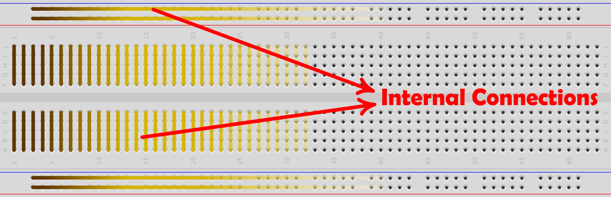
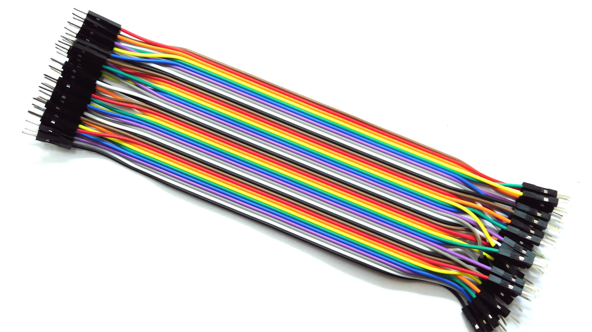
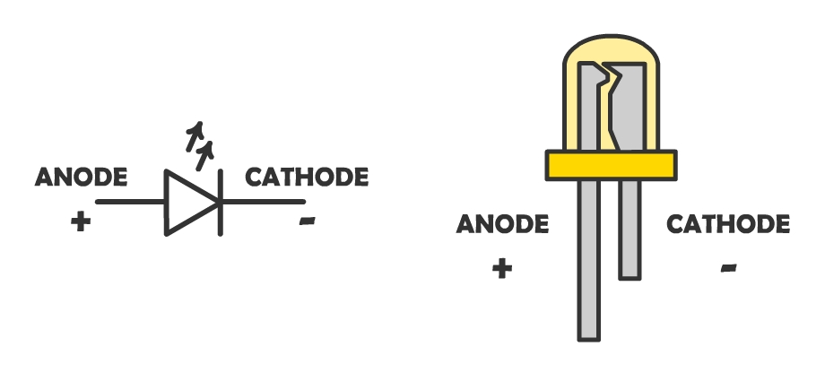
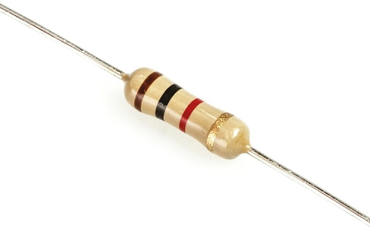
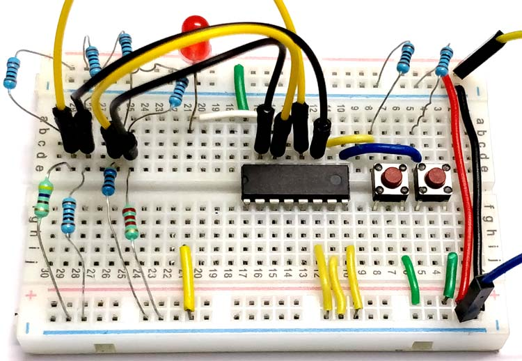
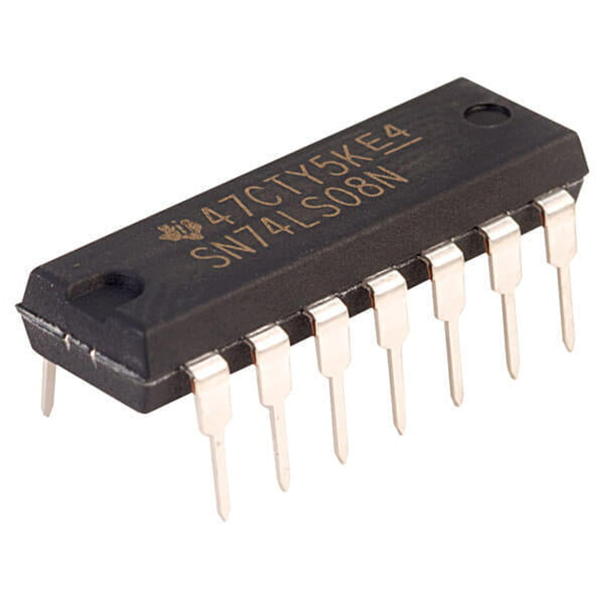
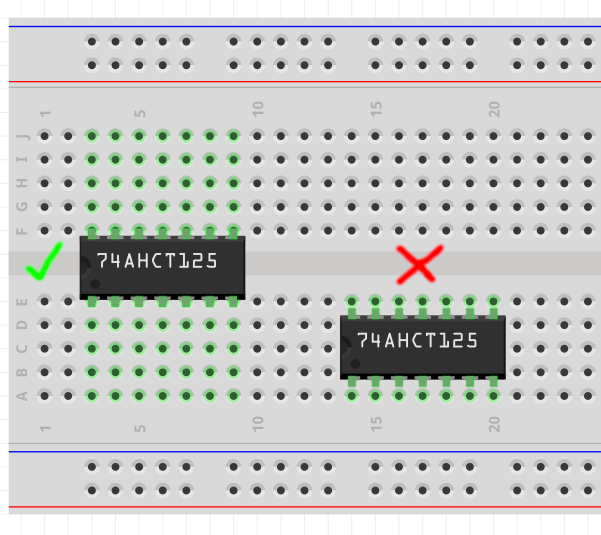
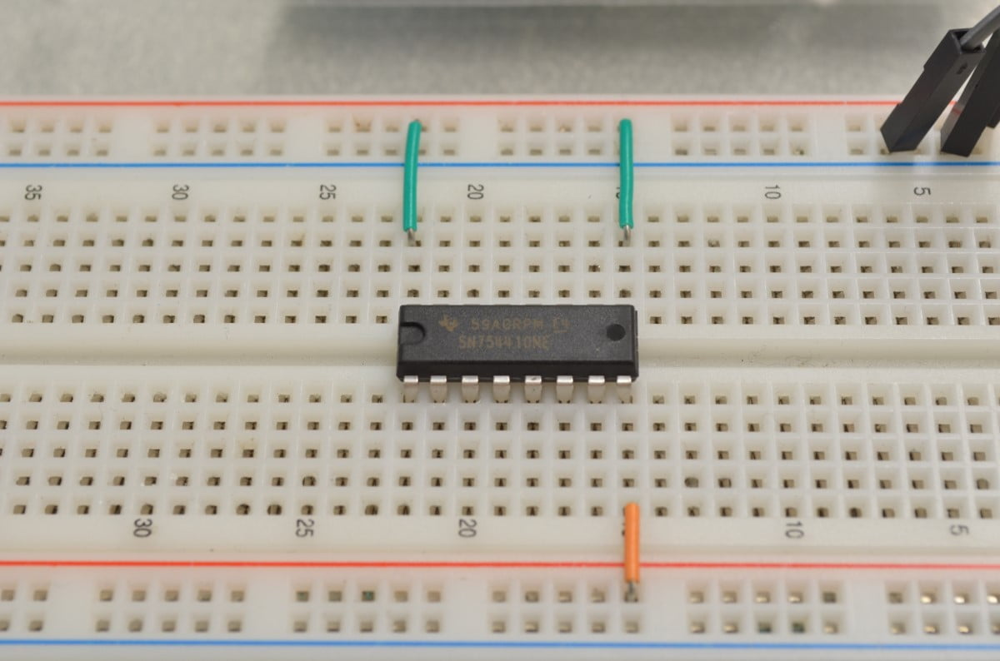

Logic Circuits Design Laboratory
Shiraz University • Fall 2025
Professor: Dr. Khunjush
TAs: Mohsen Mirzaei | Sina Liaghat | Parmida Hooshang
Artin Zarei | Parsa Karimdadi | Mohammad Reza Hadian
Introduction
What is this course about?
It's about implementing what you learned in the Logic Circuits Design course.
What will you learn in this course?
You will learn how to implement combinational and sequential circuits using basic logic gates, both on a breadboard and in Proteus on your computer.
Grading Policy
Grade Breakdown:
🧑🏫 Attendance & Lab Experiments: 60%
📝 Assignments: 25%
💡 Final Project: 15%
Overview
Session #1: Fundamentals
What is a Breadboard?
A reusable solderless platform for prototyping electronic circuits. It allows quick connections without permanent soldering.
What are Jumper Wires?
They are simply conductors used to make temporary connections between components on a breadboard.
What is an LED?
A Light Emitting Diode (LED) is a semiconductor device that emits light when current flows through it.
What is a Resistor?
A passive component that limits current flow. Its color bands indicate the resistance value. Resistors are essential for protecting LEDs and setting logic levels.
Into the Combinational World
Session 2
What do we call a combinational logic circuit?
The output depends on the combination of inputs at a specific point of time with total disregard to the previous states of the inputs.
Logic gates: the building blocks
We use ICs that act as different logic gates we used to draw on paper.
Each IC has a map that tells us the purpose of its pins.
ICs and Breadboard
Remember how the rows were connected on the breadboard?
If the pins were in the same row, the IC would short circuit!
We place the IC on the ravine (middle divider) to separates its pins.
Convention
To simplify debugging, it's best practice to place the IC in a way that it points to the power supply.
Convention
This way, it's easier to find the desirable pins.